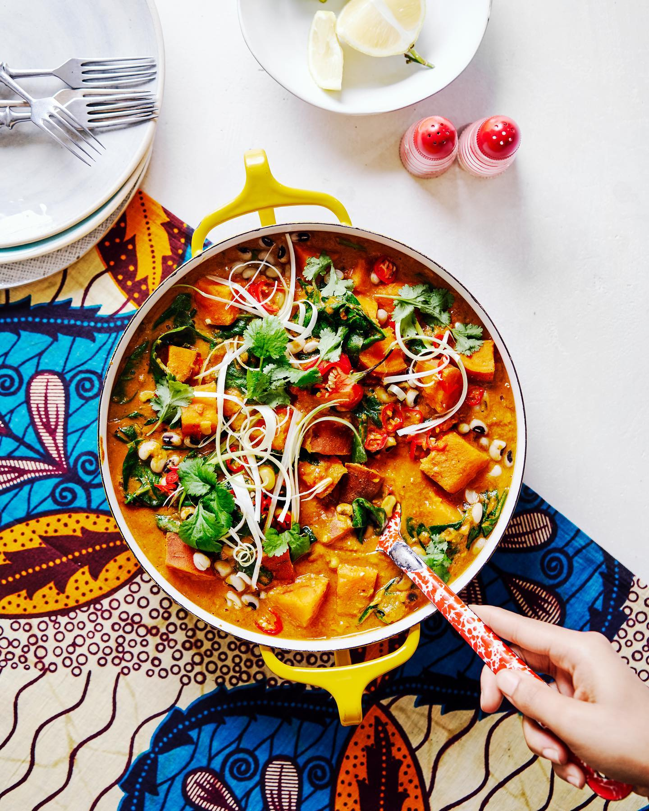
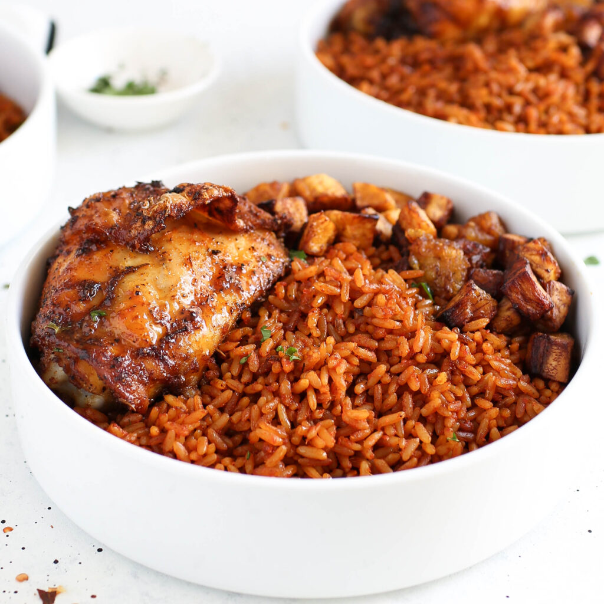
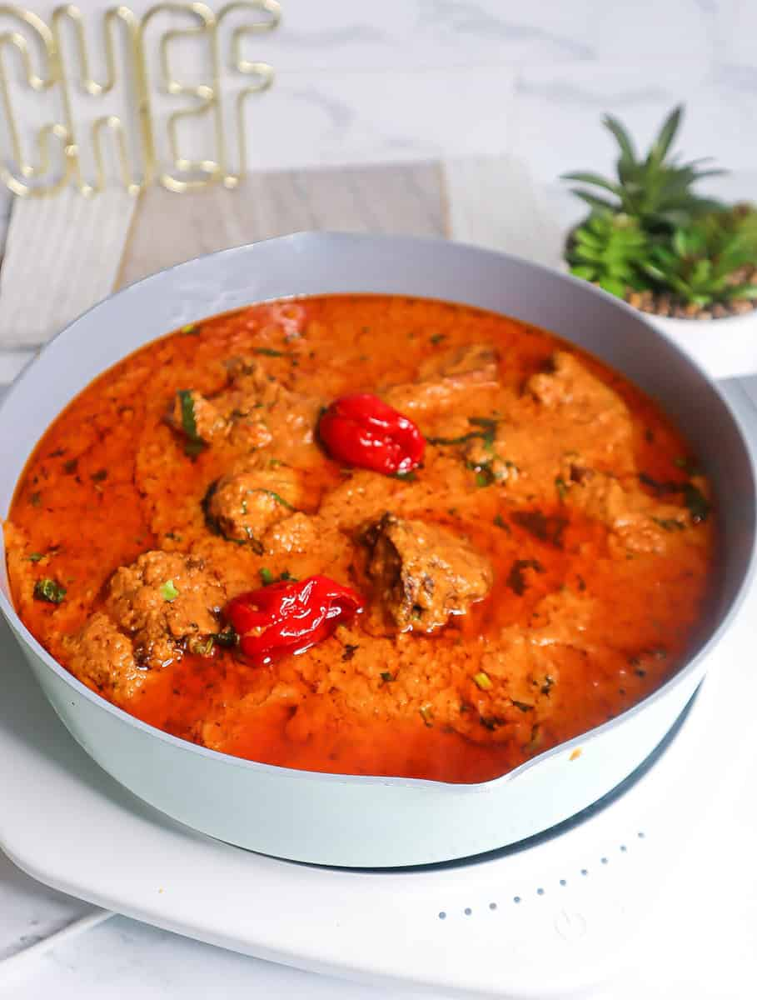
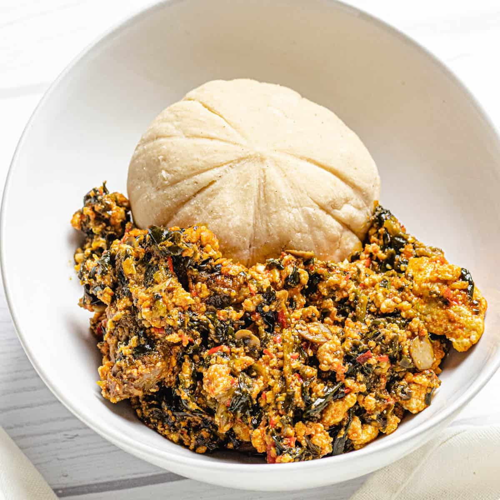
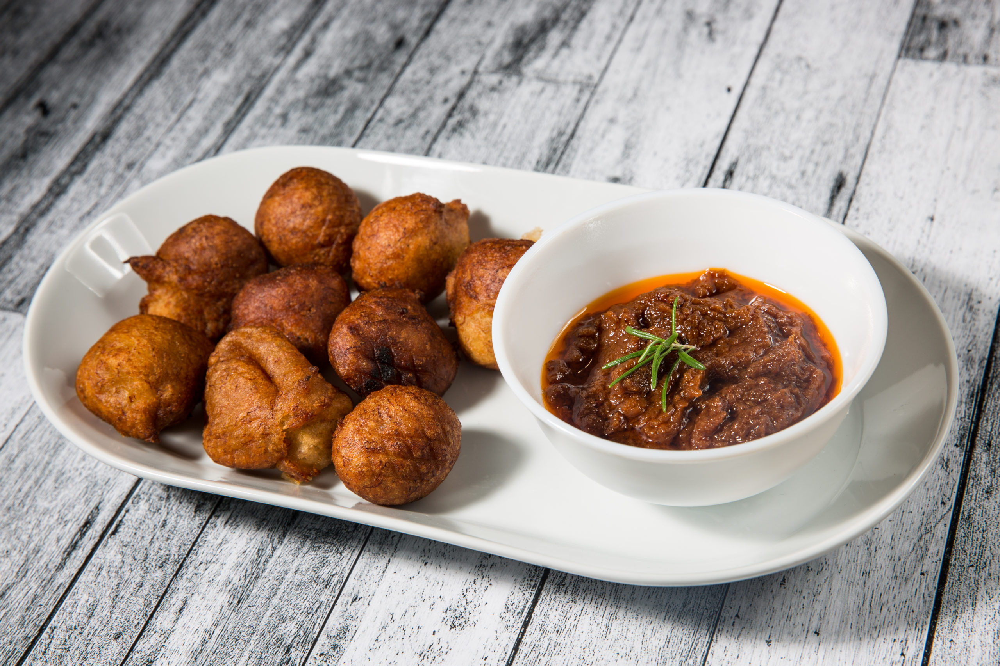
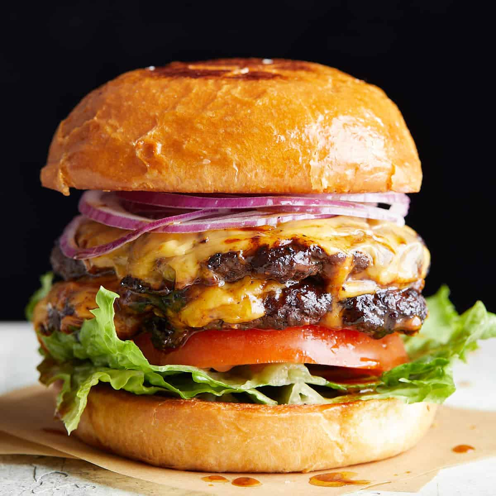
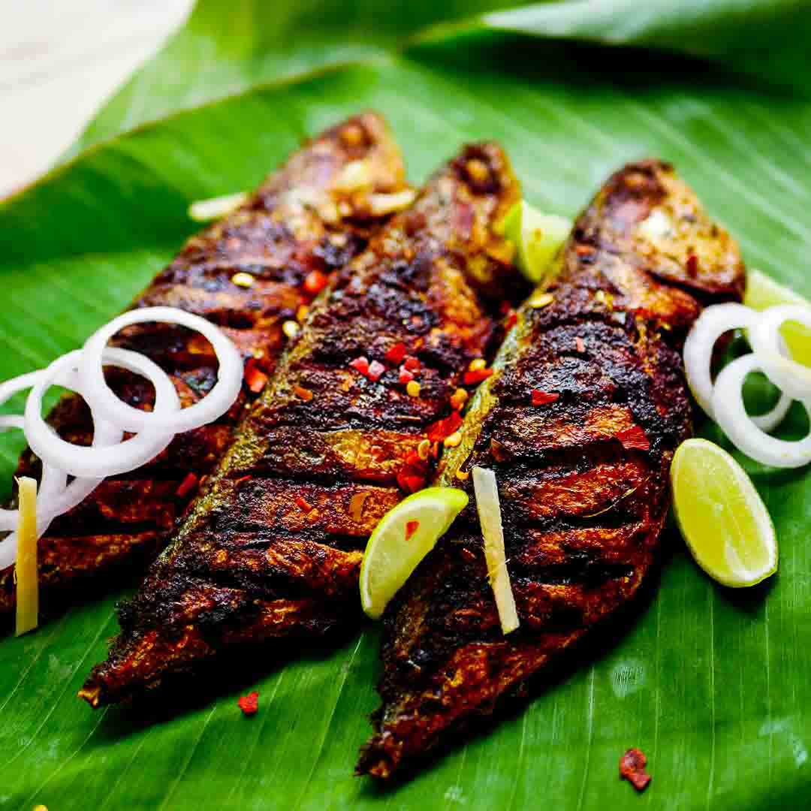
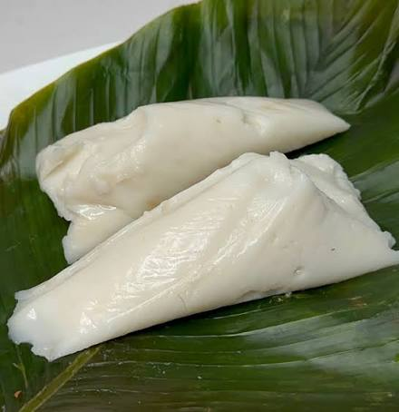
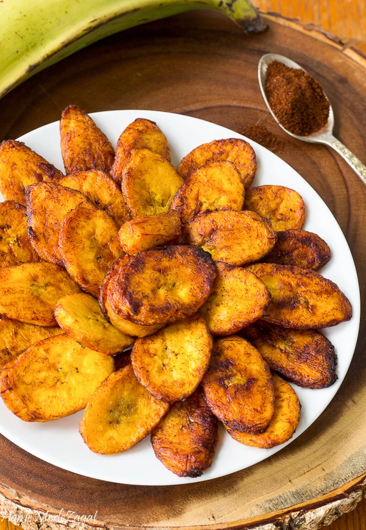
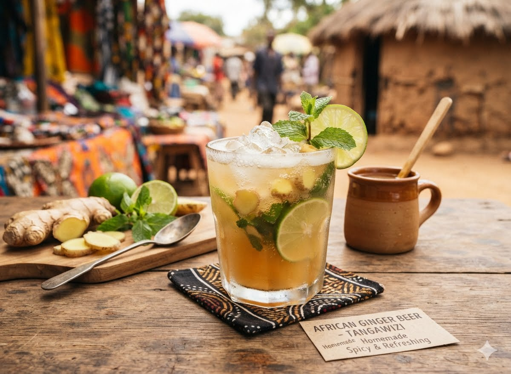

10 Essential Traditional Dishes to Experience in Sierra Leone
From the bustling streets of Freetown to the tranquil riverside villages, explore the unique flavors and stories behind Sierra Leone's classic cuisine. This is a culinary journey you shouldn't miss.

1. Jollof Rice
No discussion of West African food is complete without Jollof rice, and Sierra Leone proudly offers its own distinct, delicious version. This iconic one-pot dish features rice cooked in a rich, spicy tomato and pepper base, often with onion, garlic, and a blend of local spices.

- Key Regions: Nationwide, a staple in homes and at celebrations.
- Fun Fact: The name originates from the Wolof people of the Senegambia region, but the dish has been fully embraced and adapted across West Africa. In Sierra Leone, it's often cooked with a smoky flavor over a wood fire.
- Serving Suggestions: Frequently served with fried plantains, a side of coleslaw, or grilled fish or chicken.
Jollof rice is more than just a meal; it's the undisputed king of Sierra Leonean cuisine, bringing people together at parties, weddings, and family dinners.
2. Cassava Leaf
Cassava leaf, known locally as or Plasas, is a beloved national dish. It is a thick, savory stew made from finely pounded cassava leaves cooked with palm oil, onions, and usually meat (often beef, fish, or smoked fish), and sometimes dried shrimp. The cooking process, which requires patience to reduce the bitterness of the raw leaves, results in a rich, earthy, and deeply satisfying meal.

- Key Regions: Throughout the country, with slight variations in texture and seasoning.
- Culture: It’s a dish deeply rooted in local agriculture and communal cooking.
- Pairings: Best enjoyed with a starchy side like Fo-Fo (pounded cassava) or white rice.
3. Groundnut Stew (Peanut Soup)
Groundnut stew, known as peanut soup, is a comfort food classic in Sierra Leone. This rich and creamy stew is made from ground peanuts (peanut butter), tomatoes, and chili peppers, creating a luscious sauce that is often cooked with chicken, beef, or fish. Its nutty, spicy, and slightly sweet profile is utterly addictive.

- Key Regions: Nationwide, a hearty dish for any day of the week.
- Distinctiveness: It perfectly showcases the use of indigenous groundnuts, brought to the region by Portuguese traders centuries ago.
- Serving Suggestions: Traditionally served with rice, fufu, or sweet potatoes.
4. Fo-Fo (Pounded Cassava or Plantain)
Fo-Fo is the quintessential "swallow" of West Africa. In Sierra Leone, it is a starchy, doughy side dish made by pounding boiled cassava, plantains, or a combination of both in a wooden mortar until it achieves a smooth, elastic consistency. It's used to scoop up soups and stews like cassava leaf or groundnut stew.

- Key Regions: A staple across Sierra Leone.
- Traditional Method: The pounding of fo-fo is often a communal activity, a rhythmic spectacle that is as much about the food as it is about the social gathering.
- Cultural Roots: It is a fundamental part of the diet and a symbol of communal living.
5. Akara (Rice Cakes)
Akara, also known as bean cakes, are a popular street food and breakfast item. These deep-fried fritters are made from a paste of black-eyed peas (beans), onions, and peppers. They are crispy on the outside, soft and fluffy on the inside, and bursting with savory flavor.

- Key Regions: Very popular in cities like Freetown and Makeni.
- Cultural Roots: A dish with roots in the Yoruba culture of Nigeria, it has become a beloved staple in Sierra Leone.
- Pairings: Often enjoyed with garri (cassava flakes), spicy pepper sauce, or as a filling for a simple sandwich.
6. Hamburger
Hamburger is a classic sandwich consisting of a juicy grilled beef patty, sandwiched between two soft sesame seed buns. It is typically topped with fresh lettuce, ripe tomatoes, sliced onions, cheese, and a variety of sauces like ketchup, mustard, or mayonnaise. It's a fast-food favorite known for its savory taste and satisfying combination of textures.

- Key Regions: Popular worldwide, especially in the Freetown.
- Pairings: Typically served with crispy french fries and a cold soda or milkshake.
7. Fried Fish with Pepper Sauce
Given Sierra Leone's extensive coastline and rivers, fresh fish is an integral part of the diet. A simple yet spectacular dish is fried fish, often barracuda, snapper, or tilapia, served with a fiery, tangy pepper sauce. The fish is marinated in spices, deep-fried to crispy perfection, and served with a sauce made from scotch bonnet peppers, onions, and lime juice.

- Key Regions: Coastal regions, but enjoyed all over.
- Cultural Roots: Reflects the country's deep connection to the Atlantic Ocean.
- Serving Suggestions: Accompanied by fried plantains (dodo), rice, or cassava chips.
8. Agidi (Cornmeal Pudding)
Agidi is a light, slightly sweet cornmeal pudding, a traditional dish often wrapped in a leaf and boiled. It can be plain or flavored with beans. It is a humble but beloved food that showcases the importance of corn in the local diet.

- Key Regions: Nationwide.
- Pairings: Often eaten at breakfast with a spicy stew or just as a snack on its own.
9. Fried Plantains
Plantain, as it is known in Sierra Leone, is the beloved sweet and savory side dish of ripe plantains fried until caramelized and golden brown. The sweet, soft interior contrasts beautifully with the slightly crispy exterior, making it the perfect complement to almost any meal.

- Key Regions: Ubiquitous across the country.
- Cultural Roots: A staple food in many parts of West Africa, the plantain is a versatile crop that is used at all stages of ripeness.
- Serving Suggestions: Served with rice, beans, groundnut stew, or simply enjoyed as a snack.
10. Ginger Beer & Other Local Drinks
While not a "dish," no Sierra Leonean food experience is complete without the vibrant local drinks. Fresh ginger beer, a spicy and sweet non-alcoholic beverage made from ginger, sugar, and sometimes lime, is a must-try. Other popular drinks include poyo (palm wine), a mildly alcoholic sap tapped from palm trees, and fresh fruit juices.

- Key Regions: Ginger beer is available everywhere, while palm wine is more common in rural areas.
- Cultural Roots: Palm wine tapping is an ancient tradition, often passed down through families.
- Serving Suggestions: These drinks are the perfect refreshing counterpoint to the spicy, rich flavors of the food.